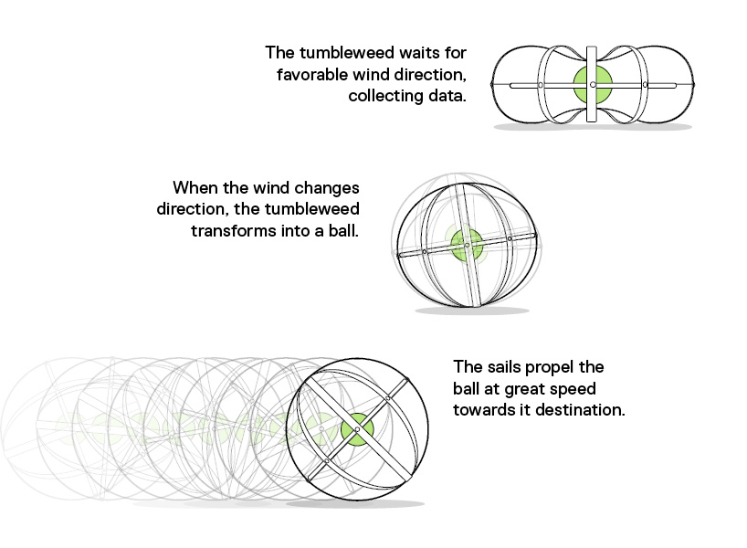

Voor deze excursie voor school ben ik naar Robotanica in Amsterdam geweest op 1 juni 2018. Robotanica vond plaats in de Tolhuistuin. Waar het hier vooral om ging was hoe we bepaalde technologie kunnen toepassen om mens en dier te helpen en hierbij tegelijkerheid rekening te houden met het ecosysteem en het klimaat. Er waren interessante werken en hieronder kan je zien welk werk ik het interessantste vond en waarom.


Tumbleweed desert
Shlomi Mir
De tumbleweed desert gebruikt de wind om een richting op te gaan. Als het geen goede richting is dan kan het ervoor kiezen dat het wacht tot dat de wind is gedraaid. Terwijl het over het uitgedroogde gebied rolt legt het data vast van de klimaat omstandigheden. Zodra de tumbleweed een plek heeft gevonden waar iets geplant zou kunnen worden laat hij zaadjes vrij die bij de omgeving en grond van dat stuk passen. De zeilen die tussen het geraamte hangen zorgt ervoor dat de tumbleweed kan gaan rollen. Daarnaast gebruikt het een kinetische processor om genoeg energie te geven aan de motor, computer en sensoren. De sensoren die gebruikt worden Door de tumbleweed word er gelijk kwalitatieve data opgeslagen en probeert het woestijnvorming te verminderen. In dit artikel staan nog meer plaatjes en een stuk informatie die ik heb gebruikt.
Ik vond dit project het interessantste, omdat er gebruik word gemaakt van een natuurlijke vorm die eigenlijk al bestaat en die dan omgevormd is naar ongeveer dezelfde structuur als een tumbleweed. Daarnaast kan hiermee heel veel tijd worden bespaard, want als wij als mens de grond zouden moeten onderzoeken om te kijken of er iets geplant kan worden dan zouden we waarschijnlijk nog jaren bezig zijn. Dit kan dus heel veel invloed hebben op het klimaat in een korte tijd door zaadjes van onder andere gras te planten.
